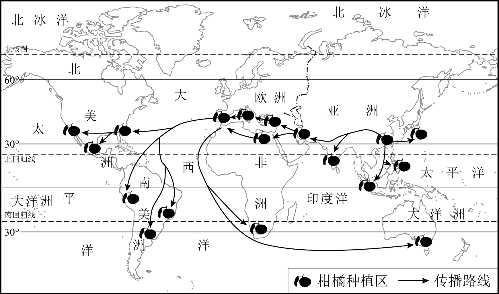

2023年北京市中考地理真题 · 选择题 第11、12、13、14、15题
长江三角洲地区对长江流域乃至全国具有辐射带动作用。图为长江三角洲地区简图。读图，完成下面小题。

11. 长江三角洲地区（ ）
A. 地处长江下游地区，濒临南海B. 依托长江干流，联系京津冀地区
C. 地处江海交汇之地，港口众多D. 依托京杭运河，联系粤港澳地区
12. 该地区 沪宁杭工业基地（ ）
沪宁杭工业基地（ ）
A. 矿产资源丰富，以重工业为主B. 以首都为核心，科研力量雄厚
C. 工业结构完整，国际竞争力强D. 邻近香港澳门，消费市场广阔
13. 为提升辐射带动作用，该地区应进一步（ ）
①完善基础设施建设②提升科技创新能力
③推进生态环境治理④增加清洁能源输出
A. ①②③B. ①②④C. ①③④D. ②③④
我国是柑橘种植的起源地之一。柑橘通过多种途径向外传播。图为我国柑橘传播路线示意图。读图，完成下面小题。

14. 我国柑橘的传播（ ）
A 向西到欧洲B. 向东到非洲
向西到欧洲B. 向东到非洲
C. 经太平洋到大洋洲D. 经印度洋到南美洲
15. 柑橘种植区（ ）
A. 南半球多于北半球B. 西半球多于东半球
C. 主要分布在北温带D. 集中在高纬度地区